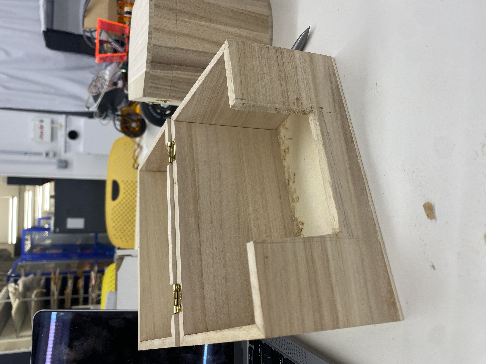
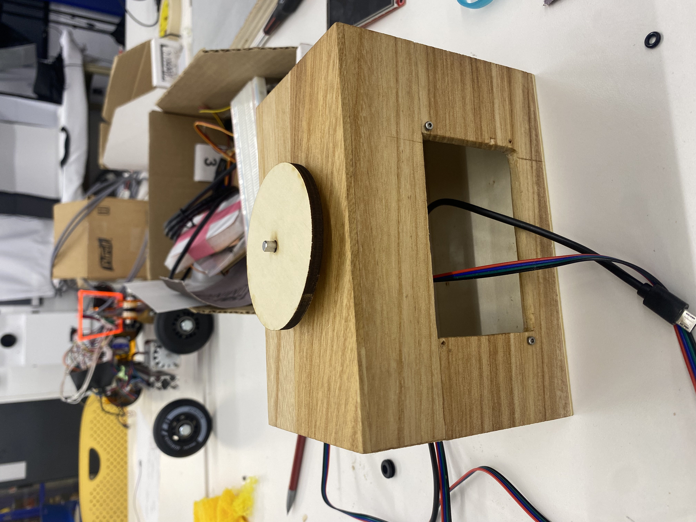
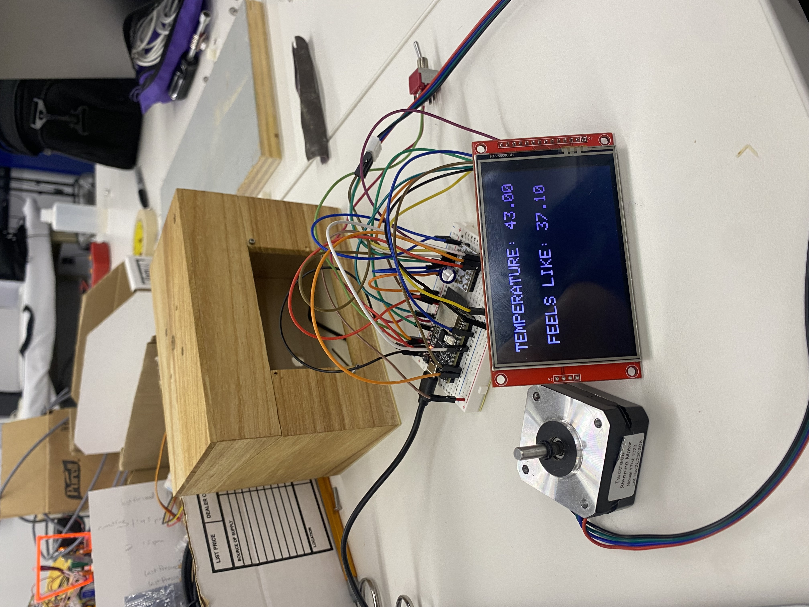

<h1 style= "text-align: center;">
Final Project </b></h1>
<div class="video-container">
<!-- Replace the src value with your desired YouTube video link -->
<iframe src="https://www.youtube.com/embed/XlgF3qIrEP4"
frameborder="0"
allow="accelerometer; autoplay; clipboard-write; encrypted-media; gyroscope; picture-in-picture"
allowfullscreen>
</iframe>
</div>
<h2 style= "text-align: center;">
A Brief Box Background</b></h2>
I chose to pursue this project so that my roommate (not in video) would stop getting mad at me for asking her what the weather is (every morning).
Many people have asked me why I don't just use the weather app. Here is a list of reasons.
1. I don't like looking at my phone in the morning. It's too bright.
2. I check the weather and then I forget what it is. And then I check it again. Everytime I check it, I have to unlock my phone and open the app. This is too much work. Now I can just look at a box.
<h2 style= "text-align: center;">
Box Creation</b></h2>
All 3D printed components of my box were created with designs from <a href="https://www.thingiverse.com/">Thingiverse</a>.
The 3D printed parts (which are all on top of my box -- see YouTube video) represent each of my blockmates. They are attached with magnets so they can be moved around.
The box was created in San Diego (I went home) in a (homemade) woodworking studio with a friend and unfortunately did not document it.
However, it took me two hours to cut a hole in the box. See below for hole:
<div class="image-container" style="margin-bottom: 20px; ; text-align: center;">

</div>
Here are two images of my box during the creation steps. I ended up soldering the pieces and moved away from using the breadboard.
<div class="image-container" style="margin-bottom: 20px; ; text-align: center;">


</div>
I should have done better documenting the process, I'm sorry. Here's a gif of me soldering:
<div class="image-container" style="margin-bottom: 20px; ; text-align: center;">
<img src="amygif.gif" width="350" height="600">
</div>
<h2 style= "text-align: center;">
Code Creation</b></h2>
See below for the code that I wrote for my box to run. I'm getting data from a weather API and displaying it on my screen. Additionally, I am using a stepper motor and a switch that turns on and off the motor.
<pre>
<code class="arduino">
#include <SPI.h>
#include <TFT_eSPI.h> // Hardware-specific library
#include <ESP32Servo.h>
#include <AccelStepper.h>
TFT_eSPI tft = TFT_eSPI(); // Invoke custom library
#include <WiFi.h>
#include <HTTPClient.h>
#include <Arduino_JSON.h>
const int stepPin = 19; // Connect to STEP pin on DRV8834
const int dirPin = 10; // Connect to DIR pin on DRV8834
const int switchPin = 5; // Switch connected to GPIO 5
const char* ssid = "MAKERSPACE";
const char* password = "12345678";
// const char* ssid = "iPhone";
// const char* password = "12345678";
// Servo myservo;
// const int servoPin = 33;
//Your Domain name with URL path or IP address with path
const char* serverName = "http://api.weatherapi.com/v1/current.json?key=9f4b6e276603413cb69193706232010&q=Boston&aqi=no";
String sensorReadings;
JSONVar weatherData;
int currTemperature;
void setup() {
// put your setup code here, to run once:
Serial.begin(115200);
WiFi.begin(ssid, password);
Serial.println("Connecting");
while(WiFi.status() != WL_CONNECTED) {
delay(500);
Serial.print(".");
}
Serial.println("");
Serial.print("Connected to WiFi network with IP Address: ");
Serial.println(WiFi.localIP());
sensorReadings = httpGETRequest(serverName);
Serial.println(sensorReadings);
weatherData = JSON.parse(sensorReadings);
// JSON.typeof(jsonVar) can be used to get the type of the var
if (JSON.typeof(weatherData) == "undefined") {
Serial.println("Parsing input failed!");
return;
}
tft.init();
tft.setRotation(1);
tft.fillScreen(TFT_BLACK);
pinMode(stepPin, OUTPUT);
pinMode(dirPin, OUTPUT);
pinMode(switchPin, INPUT_PULLUP); // Set the switch as an input
currTemperature = (int)weatherData["current"]["temp_f"];
// put your main code here, to run repeatedly:
tft.setCursor(20, 40);
tft.setTextSize(4);
tft.setTextColor(TFT_PINK, TFT_BLACK); // Set text colour to white and background to black
tft.println("TEMPERATURE: " + (String) ((double)weatherData["current"]["temp_f"]));
tft.setCursor(35, 120);
tft.setTextSize(4);
tft.setTextColor(TFT_PINK, TFT_BLACK); // Set text colour to white and background to black
tft.println("FEELS LIKE: " + (String) ((double)weatherData["current"]["feelslike_f"]));
// set up servo
// myservo.setPeriodHertz(50);
// myservo.attach(servoPin);
}
void loop() {
// Read the state of the switch
bool switchState = digitalRead(switchPin);
// Set the direction based on the switch state
digitalWrite(dirPin, switchState);
// Stepper motor steps
if(switchState == LOW){
digitalWrite(stepPin, HIGH);
delay(1);
digitalWrite(stepPin, LOW);
delay(1);
}
// if(currTemperature >= 60){
// myservo.write(50);
// }
// else{
// myservo.write(180);
//}
}
String httpGETRequest(const char* serverName) {
WiFiClient client;
HTTPClient http;
// Your Domain name with URL path or IP address with path
http.begin(client, serverName);
// If you need Node-RED/server authentication, insert user and password below
//http.setAuthorization("REPLACE_WITH_SERVER_USERNAME", "REPLACE_WITH_SERVER_PASSWORD");
// Send HTTP POST request
int httpResponseCode = http.GET();
String payload = "{}";
if (httpResponseCode>0) {
Serial.print("HTTP Response code: ");
Serial.println(httpResponseCode);
payload = http.getString();
}
else {
Serial.print("Error code: ");
Serial.println(httpResponseCode);
}
// Free resources
http.end();
return payload;
}
</code>
</pre>